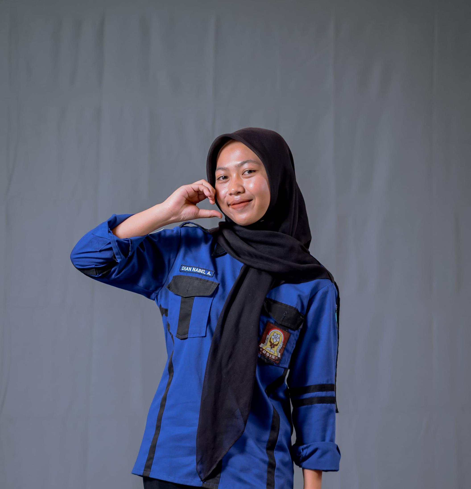

Halo! Saya Dian Nabel Agustin
Saya adalah siswa SMK Negeri 1 Nglegok jurusan Teknik Komputer dan Jaringan (TKJ). Selama menjalani pendidikan di SMK, saya aktif dalam kegiatan organisasi, khususnya sebagai anggota OSIS. Keaktifan saya dalam organisasi membentuk karakter kepemimpinan, tanggung jawab, dan kemampuan komunikasi yang baik. Di bidang akademik, saya memiliki minat tinggi dalam teknologi jaringan komputer serta keterampilan praktis dalam perakitan, pemeliharaan, dan pengelolaan sistem jaringan.